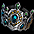

ネフォンクリーチャー
仕様クリーチャー冒険
クリーチャー合成
クリーチャー強化
クリーチャーPVP
クリーチャー図鑑
仕様
ネフォンクリーチャーとは、コクーンから出現する新しい概念の召喚獣でN/R/HR/SR/LRの5つのRankと、力/健康/知識/サポートの4タイプが存在する。
1匹のみ活性化して連れて歩くことができ、活性化したネフォンクリーチャーのステータスの半分の数値が持ち主のステータスとして追加される。
能力値の詳細は ⇒ ネフォンクリーチャー 一覧
| 種類 | ペブル コクーン |
ソーラー コクーン |
サマー コクーン |
ハロウィン コクーン |
クリスマス コクーン |
Fate[HF] コラボ コクーン |
プリズム コクーン |
|---|---|---|---|---|---|---|---|
| 入手方法 | クエスト ギルドダンジョンボス |
課金 | 期間限定 課金 |
期間限定 課金 |
期間限定 課金 |
期間限定 課金 |
期間限定 課金 |
| 出現する Rank |
N / R / HR | R / HR / SR / LR | R / HR / SR / LR SR以上はコラボクリーチャーのみ |
HR / SR / LR 40％の確率でSR以上 |
|||
| 取引 | 不可 | 可能 | 不可 | ||||
| ゴールデン メダル |
不可 | 低確率で獲得 | |||||
| Rank | N ノーマル |
R レア |
HR ハイレア |
SR スーパーレア ラミア以外 |
SR スーパーレア ラミア |
LR レジェンドレア |
|---|---|---|---|---|---|---|
| 最大Lv | 60 | 70 | 80 | 90 | 100 | |
| 初期ステータス | 110 | 122 | 135 | 160 ※ | 166 | 190 |
| ステータス上昇 | 11 | 14 | 18 | 24 ※ | 30 | 35 |
| ボーナスポイント | 1 | 2 | 3 | 4 | 5 | |
| 必要強化値 | 500 | 1400 | 3900 | 10900 | - | |
| 素材強化値 | 40 | 100 | 300 | 1000 | 3000 | |
| スキル強化 必要ゴールド |
1万 | 5万 | 8万 | 12万 | 20万 | |
| 攻撃力 | STR+INT/2 （小数点以下切捨て） | |||||
| HP | VIT*12 | |||||
※バーサーカー、ケンタウロスナイトは初期ステータス162、ステータス上昇26で、通常のSRとは少し異なります。
※アーチャーは初期ステータス163、ステータス上昇27で、通常のSRとは少し異なります。
 |
【SR】 吸血姫 攻撃力 164+92/2 = 210 HP 93*12 = 1116 STR = 力 INT = 知識 DEX = 敏捷 LUK = 運 VIT = 健康 Lv1時の初期ステータス合計 59+17+36+15+33 = 160 Lvアップ時のステータス上昇合計 7+5+3+1+4+4 = 24 Lvアップ時のボーナスポイント 4 |
 |
ゴールデンメダルは、コクーンからネフォンクリーチャー出現時に稀に付属された状態で出現する。 ステータスまたはスキルに付属し、ステータスに付属した場合はLvアップ時の上昇ポイントが2増加。 例) 通常の初期ステータス STR 10 通常のLvアップ時の上昇 +1 ゴールデンメダル付属の初期ステータス STR 12 ゴールデンメダル付属のLvアップ時の上昇 +3 |
 |
スキルに付属した場合は、習得スキルLv / 最大スキルLvが 5上昇。 例) 通常の習得スキルLv / 最大スキルLv Lv 1 / Lv 10 ゴールデンメダル付属の場合 Lv 5 / Lv 15 |
ネフォンクリーチャーのレベルを上げるには、「冒険」と「餌をあげる」の2種類がある。
餌は種類によって獲得できる経験値が異なる。
| 餌 | 獲得経験値 | |
|---|---|---|
| 発火石 | 5 | |
| 断熱石 | 5 | |
|  | 修復済みタティリス遺跡の出土品 | 80 |
| 結晶石 | 150 | |
| 共鳴石 | 150 | |
| 神秘の石 | 170 | |
| ※韓国限定※ クリーチャー鍛錬の結晶（小） | 500 | |
| 炎の石 | 600 | |
| クリーチャー鍛錬の結晶（中） | 1000 | |
| 異界の強化石 | 1300 | |
| クリーチャー鍛錬の結晶(大) | 2000 | |
クリーチャー冒険

1〜4匹で1チームを作り、冒険を行う。
1回冒険を行う度に、活動ポイントを1消費する。
活動ポイントは初期値10あり、0時に初期化される。
冒険を中断してもポイントは戻らない。
課金アイテム「ユニティーストラップ」を使用してチームスロット枠を追加することで、最大3チームまで同時に冒険を行うことができる。
PVPチームにセットしたクリーチャーは、冒険を行うことはできない。
冒険中のクリーチャーは、活性化できない。
冒険フィールドは力/健康/知識/サポートの4タイプあり、3段階の難易度（下層/中層/上層）と4種類の時間（2,4,6,8時間）から各々選択できる。

| 冒険に勝利すると、報酬としてネフォンクリーチャー経験値と、一定確率で水光石やサナの材料ボックスを獲得できる。 水光石はネフォンクリーチャーのスキルレベルを上げたり、図鑑登録する際に必要となる。 |
|
 |
|
 |
| サナの材料ボックスから出現するアイテム | |
|---|---|
| タティリス遺跡のかけら | |
| 修復済みタティリス遺跡の出土品 | |
| 神秘の石のかけら | |
| 神秘の石 | |
| 黒き炎の欠片 | |
| 結晶石 | |
| 炎の石 | |
クリーチャー合成
 |
素材となるクリーチャー2〜4匹をセット。 最もRankが高いものをベースとして、新しいクリーチャー1匹が生成される。 ゴールデンメダル付属のクリーチャーを素材にした場合、合成後のクリーチャーにゴールデンメダルがランダムな箇所で引き継がれる。 素材クリーチャーに複数のゴールデンメダルが付属する場合は、最低1個から最大で素材クリーチャーのゴールデンメダル合計数までのランダムな個数のゴールデンメダルが付属される。 |
 |
素材となるクリーチャーは全て消滅する。 |
 |
生成されたクリーチャーは、 素材のLvに関わらずLv1になる。 |
クリーチャー強化
 |
N → R → HR → SR → LR へ Rankを上げ、最大Lvを上昇させることができる。 |
 |
強化したいクリーチャーと 素材となるクリーチャーをセット。 クリーチャーのRankによって、必要強化値と素材強化値が異なる。 同タイプのクリーチャーを素材にした場合、素材強化値は1.5倍となる。 花霊ワスレナとドレアスは、同じサポートタイプなので、 ドレアス 【HR】 サポート 素材強化値 300*1.5=450 ルジュエ 【R】 健康 素材強化値 100 強化値合計 550 |
 |
素材となるクリーチャーは全て消滅する。 |
 |
N → R へRankが上昇。 ただし、最大Lvが上がるだけで、他の基本性能は元のRankと同じ扱い。 強化前のLvはそのまま引き継がれる。 |
クリーチャーPVP
クリーチャーPVPでは、他のプレイヤーの所有するネフォンクリーチャーと対戦させることができる。
 |
冒険家協会ブルンネンシュティグ本部の クリーチャーPVP（44.41）にて、 クリーチャーPVPを申し込む。 |

PVPは、1回につき活動ポイントを1消費する。
自分の勝ち点と近い16チームからランダムで4チームがマッチングされ、4チーム全てに勝利すると対戦相手が更新される。
また、マッチングされたチームは6時間に1度、自動更新される。
更新ボタンを使用して手動で3回まで更新することも可能。
| 対戦リスト手動更新 | 必要なゴールド |
|---|---|
| 初回 | 無料 |
| 2回目 | 1万G |
| 3回目 | 10万G |
PVPの勝ち点は1000点からスタートし、勝ち点によって等級が決定される。
通常の勝利に加え、連勝によるボーナス点も発生する。
チャレンジャー等級は順位により紋章が変動する。
PVPランキングはクリーチャーPVPにて確認することができる。

| 紋章 | 等級 | 勝ち点 | 勝利時の獲得勝点 | 敗北時の損失勝ち点 |
|---|---|---|---|---|
| チャレンジャー | 7000〜9999 | 8 | 12 | |
| ダイヤモンド | 5000〜6999 | 9 | 11 | |
| プラチナ | 3400〜4999 | 10 | 10 | |
| ゴールド | 2200〜3399 | 10 | 9 | |
| シルバー | 1400〜2199 | 10 | 8 | |
| ブロンズ | 1〜1399 | 10 | 7 |
 |
クリーチャーPVPに勝利するとネフォンクリーチャーコインを獲得できる。 クリーチャー図鑑登録する際に必要となる。 |
クリーチャー図鑑
封印されたスロットを解除し、ネフォンクリーチャーを図鑑に登録することでキャラクター本体のステータス増加や能力値ボーナスが発生する。
期間限定のサマーコクーンやハロウィンコクーンなどから出現する限定種は、図鑑登録不可。
登録する際は、最大Lvまで育てたネフォンクリーチャーとネフォンクリーチャーコインが必要となる。
図鑑登録してもネフォンクリーチャーは消滅せず、維持される。

クリーチャーのタイプや等級によって、追加能力値や封印解除に必要な材料は異なる。
| Rank | 登録追加能力値 （各Typeのステータス） |
封印解除に 必要な水光石 |
図鑑登録に必要な ネフォンクリーチャーコイン |
|---|---|---|---|
| N | +3 | 各Typeの水光石 10個 | 5個 |
| R | +5 | 各Typeの水光石 15個 | 10個 |
| HR | +20 | 各Typeの水光石 20個 | 20個 |
| SR | +1/レベル 8 | 各Typeの水光石 30個 | 40個 |
| LR | +1/レベル 2 | 各Typeの水光石 40個 | 100個 |